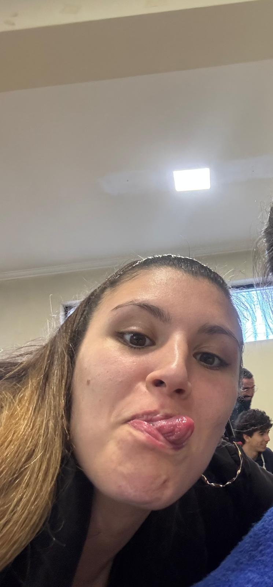
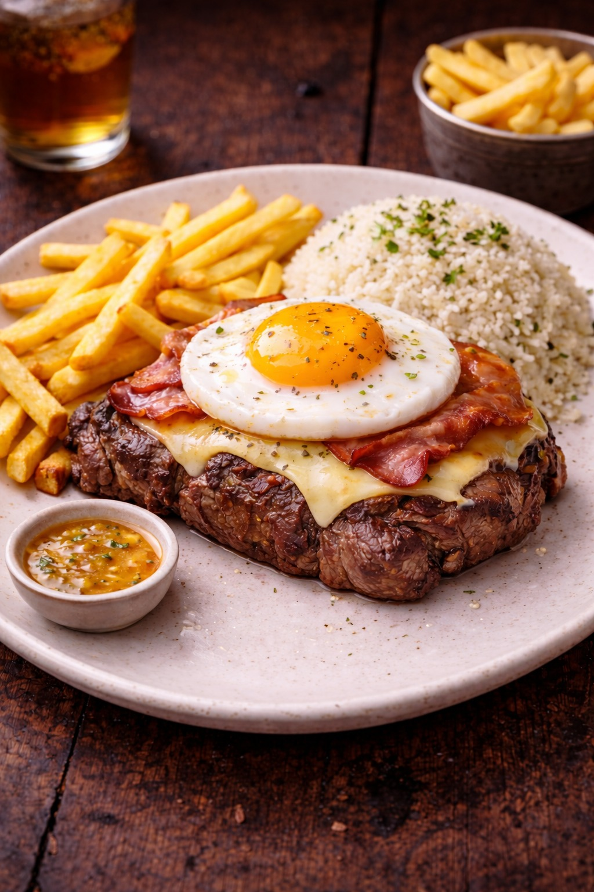
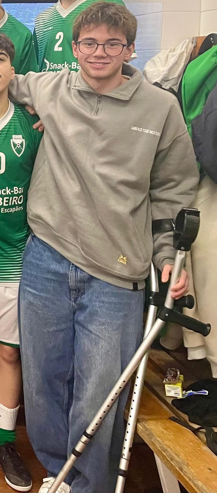

O favorito
dos sócios
Sócio que é sócio, vem ao abate e não deixa de lado o "prega-me isto", esta saborosa refeição,
pode deixar-te de fome abatida com o graciosíssimo bife de vaca premium, vinda dos açores,
com batatas fritas feitas na hora deliciosas e suculentas com um molhinho saboroso a parte
e de não deixar o arroz de exelência de lado.

TATIANA SALSA
Os nossos criadores
Olá eu sou o João, tenho 18 anos e sou a mente brilhante por detrás deste restaurante.
O Guilherme é só um sócio que deu o guito, decidimos abrir este espaço,
pois a zona da Amadora estava fraca em restaurante deste género, espero que gostem do espaço.

Eu sou o Guilherme, criador desta página, o outro encontrei na rua
e pensa que foi ele que fez tudo sozinho.
Decidimos desenvolver esta página porque achamos que seria fixe e que dava para entreter.